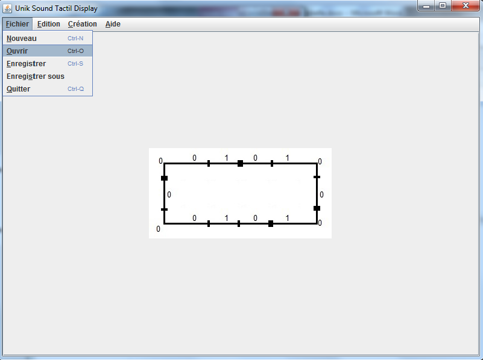

Circuits logiques
On appelle circuit logique un ensemble de portes logiques reliées entre elles pour répondre à une expression algébrique.
Il s'agit donc d'aller transcrire en schéma électrique cette expression algébrique.

Créé avec HelpNDoc Personal Edition: Éditeur complet de livres électroniques ePub